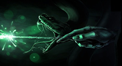

Harry Potter
Böckerna handlar om den föräldralöse Harry Potter som har vuxit upp hos sin döda mors
släktingar, den kärlekslösa familjen Dursley. Hemma hos familjen Dursley blir han mobbad
av sin kusin Dudley och utfryst av alla. Familjen Dursley säger att Harrys föräldrar
dog i en bilolycka. På sin elvaårsdag får han av halvjätten Rubeus Hagrid reda på att han är
trollkarl, att han inte hör hemma hos mugglarfamiljen (mugglare är icke-magiska människor),
att hans föräldrar blev mördade av den onda Lord Voldemort, och att han har antagits till
utbildning på internatskolan Hogwarts (där hans föräldrar också har gått). Familjen
vägrar låta Harry se brevet från Hogwarts, därför kommer Hagrid och hämtar honom, och
visar sedan vägen till Hogwarts skola för häxkonster och trolldom.
Filmerna är mycket bra och underhållande vissa är inte så väldigt bra för yngre barn att se för de
är väldigt mörka ju fler filmer man ser.
- Harry potter och de vises sten
- Harry potter och hemligheternas kammare
- Harry potter och fången från Azkaban
- Harry potter och den flammande bägaren
- Harry potter och Fenixorden
- Harry potter och Halvblodsprinsen
- Harry potter och dödsrelikerna-Del 1
- Harry potter och dödsrelikerna-Del 2
FILMSIDAN